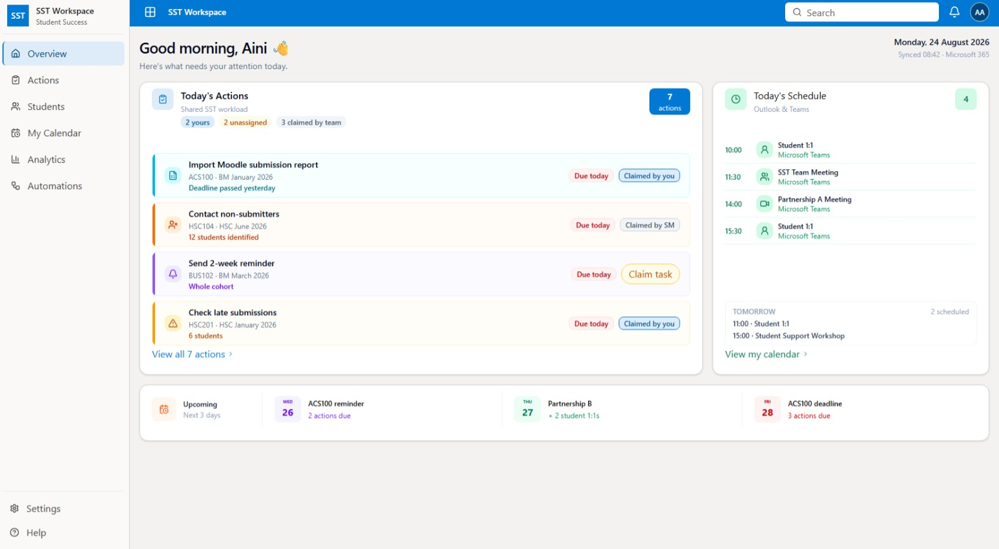

Student Success
Workflow
Making academic support easier to see and act on.
View case studyUX / PRODUCT / BEHAVIOUR
PSYCHOLOGY DATA SCIENCE UX
I’m Aini. I use psychology, data and design to understand how people use products and make complex experiences feel clearer.
EXPLORE MY WORKSELECTED WORK
Drag or swipe the globe to explore. Use arrow keys when focused.

Making academic support easier to see and act on.
View case studyBehavioural signals for more informed decisions.
View case studyHelping students find and book support.
Case study in progressDiscovering local history through place.
Case study in progressTurning research into practical decisions.
Case study in progressA BIT ABOUT ME
Different pieces,I’m interested in the gap between how a product is meant to work and how people actually use it. Psychology and data science have taught me to look for patterns, but the most useful insights often start with listening: what someone finds confusing, what they hesitate over, or the workaround they’ve made for themselves.
Away from design, I play football, follow politics, and happily lose an evening to crime fiction or a documentary.
Explore my CVGET TO KNOW HOW I THINK
Reflections on UX, data, AI and the process of becoming a designer.
What studying Data Science taught me about evidence, uncertainty and understanding users.
Read on NotionHow AI research influenced the way I think about human judgement, evidence and design.
Read on NotionDesigning a portfolio assistant that helps recruiters explore real project evidence.
Read on Notion